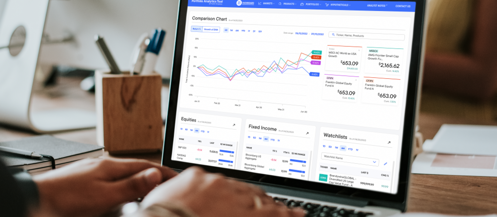
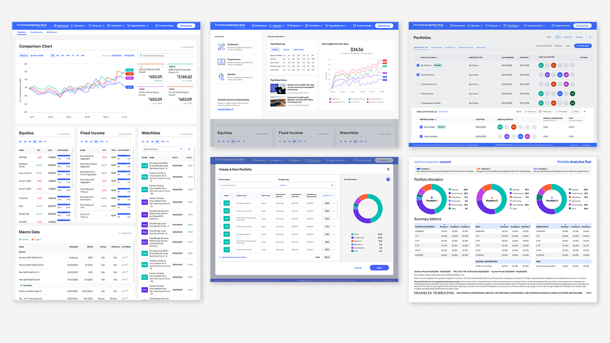

Portfolio Analysis
Led design for a portfolio analytics platform serving financial sales professionals—unifying two disconnected platforms into a coherent experience and defining a growth strategy for expanding to new user types.

A portfolio analytics tool for financial sales professionals—built across two separate platforms with no shared design system and no unified workflows connecting them. The challenge was to bring it together into a coherent experience while building a foundation for future growth.

I built and led the design team, managed client relationships, and contributed hands-on to complex UX problems and strategy work throughout the engagement.